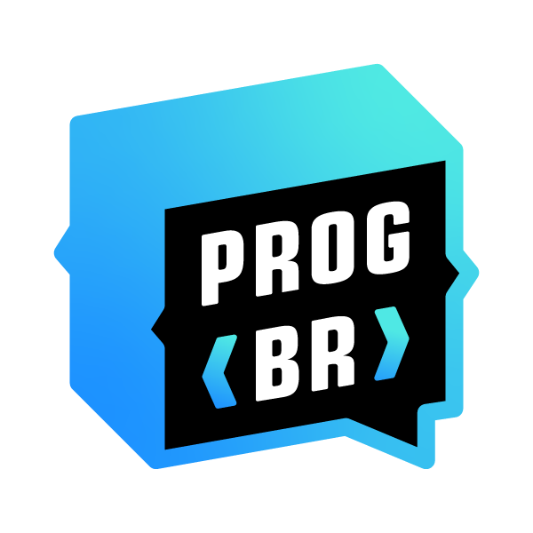

Cidade: Santa Cruz da Conceição
Telefone: (19)99994-8161
Email: brianetec@gmail.com
Se tornar um grande programador
Ensino Médio Integrado com Tec. Informática
ETEC Dep. Salim Sedeh - Leme
Tec. Mecatrônica
ETEC Pref. Alberto Feres - Araras
Cursando Ensino Superior em Ciências Contábeis
Uninter
Criador de conteúdo - Programador Br
Criar conteúdo sobre programação e ajudar outras pessoas a usar a programação no dia a dia
Área administrativa do condomínio Residencial Lagoa de Araras-SP
Gerir, cuidar, fazer cobranças, prestar contas, responder associados entre outros serviços.